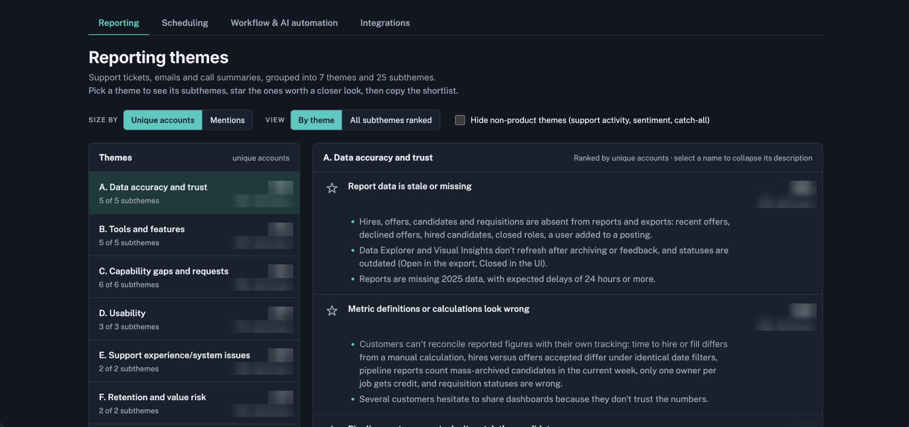
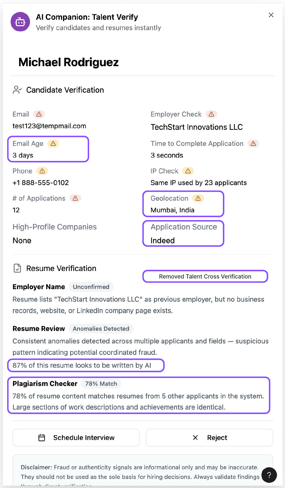
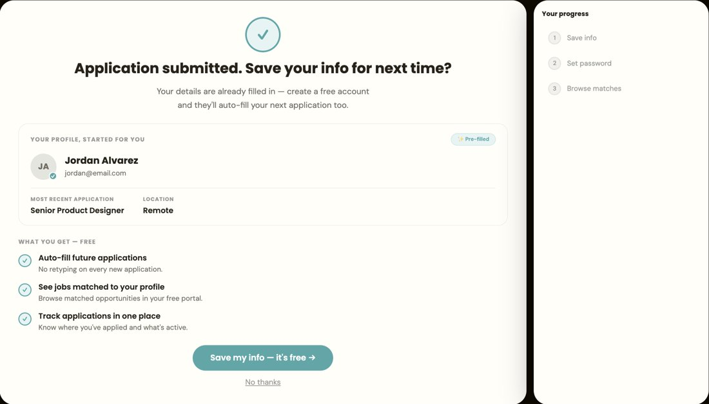

Deciding what to build next with data.
I bridge user focus and product strategy: prioritizing roadmaps with customer evidence, scoping MVPs, testing market fit of new product ideas before launch, and deciding how and where AI fits in a product.
See selected workAbout me
I studied Systems Design Engineering at the University of Waterloo and have worked in UX and engineering roles. I bring user empathy into technical conversations.
Selected work

Churn Reduction Roadmap Guided by VoC Analysis
Product teams knew which areas were driving churn, but not what specific issues to fix. I themed 10,000 rows of voice-of-customer (VoC) data from support tickets, emails and calls across four product areas. I created a reusable skill to theme VoC data so PMs can shortlist specific product issues to add to their roadmaps, organized by number of customers affected.
Created an interactive tool with findings broken down so PMs can quickly find what’s most relevant to them.

Defining the MVP for Candidate Fraud Detection
The team had a long list of possible fraud signals. I tested a prototype with recruiters, iterating after every session to test a high number of possibilities in a tight time frame.
Categorized possible MVP signals into high-value adds, lower priority signals, and not useful ones that should be cut.

Testing Product Market Fit with a New Audience
A new product for job seekers depended on people signing up and upgrading to a paid tier. I gauged consumer interest before the team committed to a design and vendors.
The team decided not to launch it as designed and went back to come up with a more competitive offer.
Scoping the First Release of an MCP
Customers were building their own MCPs to connect AI assistants to our product. I talked to them to learn which capabilities an official MCP should prioritize for its first release.
The research guided the first release to focus on reporting and the hiring-manager experience.
How I work
Three habits I bring to every project.
Start from the question
Skilled at breaking down problems to their root question and determining what data, if any, is needed to solve it.
Moving fast with confidence
I build AI tools for the slow parts of research, from redacting transcripts to theming thousands of support records, so the same analysis can be rerun as new data comes in. Leaving intentional points to check the output to make sure things stay on the right track.
Creating smoother operations for the team
I set up a tagging system that makes past research searchable, and wrote guidance that helps PMs frame questions and run low-risk research themselves.